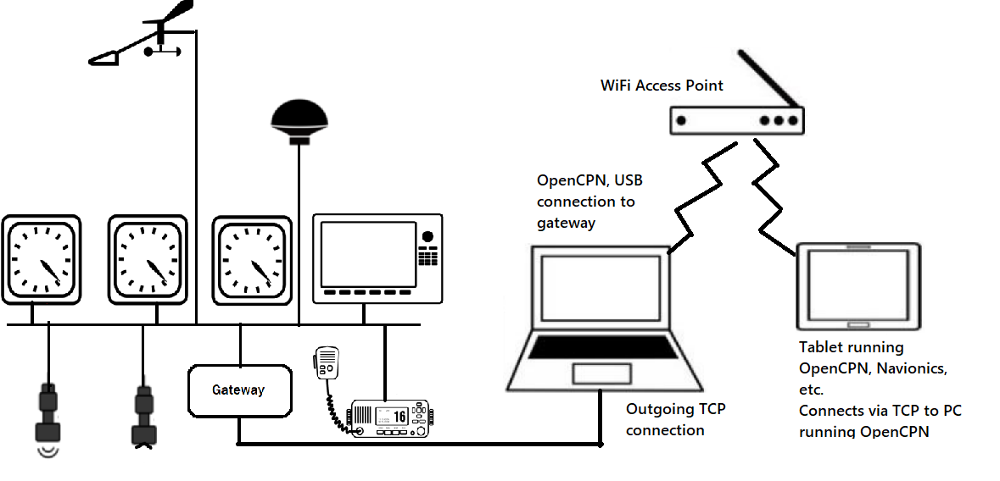
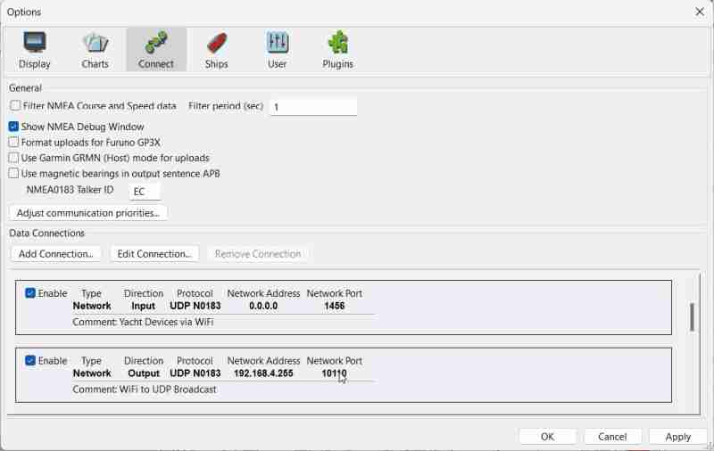
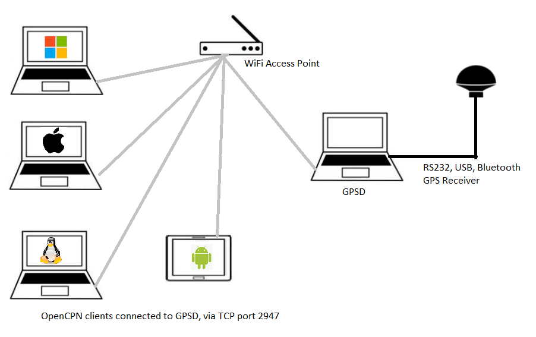
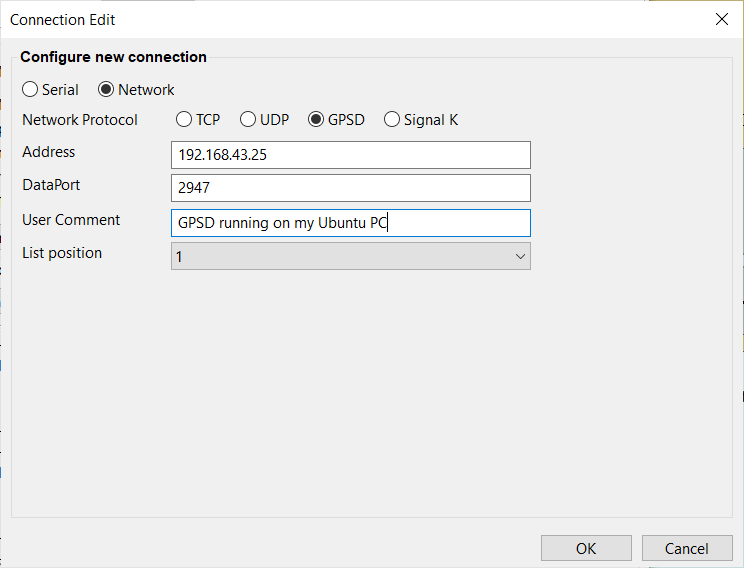
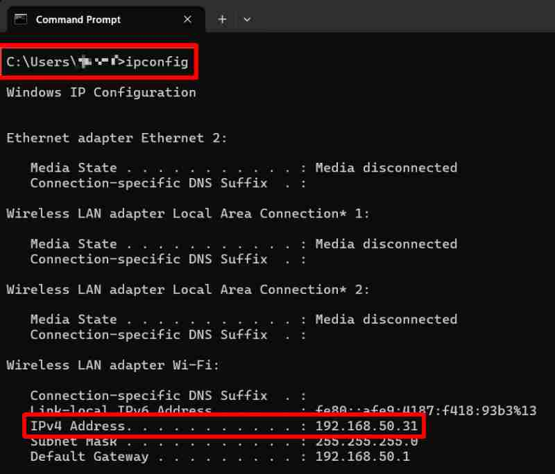
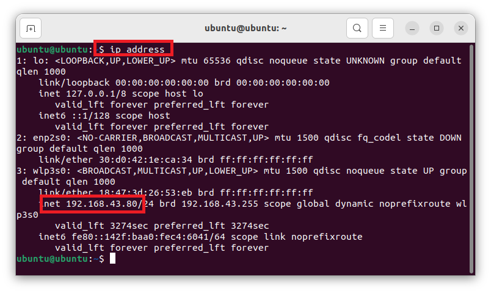

Connection Notes
If you already have an application connected to your gps that is connected with a serial port, OpenCPN will not be able to connect to the same port. Two applications cannot use a port simultaneously. On Linux, using GPSD in such a situation will allow multiple connections. This only works if your "other application" supports the GPSD. As an alternative on Linux, you can use Kplex (also for Mac) or Muplex which can create pseudo terminals ("virtual serial ports") to share NMEA data between applications.
If an NMEA 0183 sentence is filtered on an input connection and opencpn.conf/.ini has the following setting:
LegacyInputCOMPortFilterBehaviour=1
then it will still enter the internal multiplexer. So, it will be available to output connections, unless it’s filtered there as well. If the setting is
LegacyInputCOMPortFilterBehaviour=0
then the message will not be placed on the internal multiplexer. This will only work for serial connections. Echoing back a network connection, on the input port for output, will not work.
-
NMEA data can also come from the VDR plugin. These sentences will be labeled as such in the Debug Window and have "0" priority.
No Flow Control on Serial Ports. By nature, NMEA 0183 and NMEA 2000 don’t do flow control. If a message gets lost, it gets lost… It will be repeated at some point, and buffering a delayed message that has lost its meaning, when there is more current & accurate data available is not useful. If interfacing the NMEA-specified way, there is no hardware flow control.
Networking Notes
IP Addresses
-
Localhost IP Address - A special hostname that allows a computer to connect to and communicate with itself. The corresponding IP address for localhost is 127.0.0.1. "'Host' typically refers to a server on the internet. Localhost represents a computer that is making a request to itself, in this case acting as a virtual loopback server.
-
127.0.0.1 IP Address - A reserved address for local servers on computers. Localhost and 127.0.0.1 are synonymous.
-
0.0.0.0 IP Address - A non-routable placeholder address, a catch-all and a default route address depending on context. In some cases, it means accept all IP addresses (incoming), while in other cases it may mean block all IP addresses. It can also represent the "default route" when configuring network interfaces.
Note: OpenCPN requires a routable, non-local IP address for UDP outputs, e.g. an autopilot. For TCP and UDP inputs, 0.0.0.0 is used to listen on all interfaces.
Port Numbers
-
10110 is the port number for NMEA 0183 over TCP or UDP that has been assigned by the Internet Engineering Task Force (IETF). In general all devices that support NMEA 0183 over TCP or UDP use this default number,
-
Similarly, port 2947 is the IETF assigned port number for GPSD and 3000 default port number for SignalK Server
-
In all cases you should check the device vendor’s documentation or verify during installation to ensure all devices are using the correct port number.
-
If you choose to use your own port number, select one from the range 49152 to 65535 to ensure it does not interfere with other applications and also configure your firewall to allow your selected port.
UDP Protocol
User Data Protocol (UDP) is a method of transmitting data without negotiating a connection between two endpoints (there is no handshake between a server and a client). There is also no detection and retransmission of data lost in the network. It is less reliable, and has no delivery guarantee, but is faster, with prompt delivery and is suitable for small networks. Within a small home or boat network data loss should not normally occur and in any case, NMEA data is generally updated frequently by "talkers". UDP is suited for broadcasting to multiple devices at once. Two UDP connections can be configured at once, one for receiving and one for output, using the same address.
-
For UDP input no IP is required. Try just going with address 0.0.0.0 and the port that matches the sender’s port, e.g. 10110.
-
For UDP output, if you make the last octet of a Class C IP address 255 then messages should go to all devices on that subnet. EG: To reach all machines within a local network, such as a wifi router, use the address 192.168.x.255.
-
Any router in between the sender and OpenCPN must be configured to not block the assigned port number.
An OpenCPN UDP data connection will listen for data destined for the DataPort on any system interface and on the broadcast address of any connected network.
-
Multiplexers and similar devices broadcast datagrams to the whole network without caring whether any device listens for them or not.
-
In OpenCPN this scenario is usually represented by an incoming UDP connection with address 0.0.0.0 (equivalent to “listen for any broadcast received on any interface”)
-
Sending data targeting the autopilot out of OpenCPN is a different, independent, task, which should usually be a unicast (equivalent to “send to only one receiver”, in some cases the multiplexer).
-
In OpenCPN, this would be represented by an outgoing UDP connection with the multiplexer’s IP address.
-
It is absolutely OK (and the correct thing to do) to configure two UDP connections with the same port number in OpenCPN, the input one to receive the broadcasts from the multiplexer and the output one to transmit the unicast to it.
-
Any router in between the sender and OpenCPN must be configured to not block the assigned port number. Sometimes a high port number (like 10110) will not be blocked.
UDP input
If you select Receive Input on this Port, then the connection will listen for another device on the network. * For UDP input, no IP address is required, but the Port is required. Try just going with the port matching the sender’s port, for example: “0.0.0.0” or "localhost" and “10110”.
When adding a network connection for UDP receive there is no need to specify the IP address. The port is required but not the IP address.
-
However, if you wish to receive UDP multicast data you must enter the multicast IP address to which those data are being sent or the system will not see them.
UDP output
If you uncheck Receive Input on this Port and then check Output on this port, then you are setting up a UDP output connection. The sending end needs to specify both IP address and port number.
-
Enter the IP address and Dataport for the UDP client you want to receive the data.
-
If you make the last octet of the IP address “255”, then messages should go to all devices on that subnet.
UDP NMEA Repeater
The purpose of this configuration is to have one computer running OpenCPN and interfaced with the boat’s network and any additional sensors. This computer will retransmit all or some received NMEA 0183 (not NMEA 2000) data to another computer, also running OpenCPN. Thus a highly protected and capable computer can be inside the vessel cabin while a portable tablet can be located at the helm, receiving data wirelessly.

In this case, the retransmitting computer has OpenCPN with Dataports configured for input and output. If the Dataports are different, or are on separate networks or one or both are serial, then no filtering is required.
Here, the input is UDP on any IP address, with a Dataport of 1496, which is the setting a Yacht Devices YDWG has for UDP output. The output is UDP on the local network 192.168.4.255, which is the broadcast IP address. The Dataport is 10110, which being different than 1496, prevents looping.

If both connection ports are on the same network and have the same Dataport number, then in order to prevent OpenCPN from receiving its own outputs and then retransmitting them, ad infinitum, the input and output must be filtered, such that the output messages are not allowed as input.
The assumption is that both computers are on the same network subnet. If not, then any intermediary routers must pass Dataport in use through, and the IP address translation must be accommodated at each computer.
See: Advanced
User Manual - Network Repeater (ca. 2015)
See:
Supplemental
Hardware - WiFi Repeater to Tablet PC (ca. 2015)
TCP Protocol
TCP is a "connection-oriented" protocol which provides a reliable link between two network endpoints. TCP connections are first negotiated with a two-way handshake and then it ensures that any network packets lost in transit are re-transmitted. TCP is a “one-to-one” connection and broadcast or multicast addresses cannot be used with TCP.
Internet AIS servers normally accept TCP connections, as do many serial-to-network and WiFi devices.
TCP input
To make a connection to a remote TCP server, enter its IP address or hostname in the Address box and the TCP port on which the server listens in the DataPort box. Many devices use a non-standard TCP port rather than OpenCPN’s standard of 10110, so do check the server’s documentation.
Network TCP Input NMEA 0183 Address:192.168.1.32 DataPort:10111 with Filtered Input Sentences.
TCP output
If 0.0.0.0 is entered in the Address box, OpenCPN will act as a TCP server, accepting a connection from a remote TCP client. OpenCPN will listen on all its host computer’s network interfaces for TCP connections to the port specified in the DataPort field. There should normally be no reason to select a DataPort value other than the standard 10110 unless multiple servers are required.
Network TCP Output NMEA 0183 Address:192.168.1.32 DataPort:10111 with Filtered Output Sentences.
-
In the current implementation, a single data connection can accept only one client.
-
If multiple clients wish to connect to OpenCPN, a dedicated data connection must be provided for each with different DataPort values.
GPSD
GPS Service Daemon (GPSD) is a service daemon for Linux, OpenBSD and Mac OS X. GPSD connects to GPS receivers via serial, USB, Bluetooth, or to another GPSD service on the network. It allows multiple clients to access a single GPS receiver simultaneously. The clients connect to GPSD using TCP and port 2947. Clients include all versions of OpenCPN running on all of the supported Operating Systems.

To create a connection to a GPSD server, verify the IP address of the GPSD and the port number (usually the default port number which is 2947). Then just add a new connection to OpenCPN using the correct parameters. If you are running OpenCPN on the same PC on which GPSD is running, you may also use "localhost" as the IP Address.

Note: Ubuntu users - If GPSD is installed - use it. If you prefer to use a serial connection, un-install GPSD. The reason is that GPSD starts automatically when, for example, a USB GPS is connected. This will block the serial port that the GPS communicates over (/dev/ttyUSB0 in many cases), hence no other serial connection to the GPS is possible. So it’s an either-or situation.
Broadcast and Multicast
In addition to link-local IP addresses used for point-to-point TCP connections, e.g. 192.168.1.x, OpenCPN users are likely to use 0.0.0.0 (accepting TCP client connections, or for UDP), x.x.x.255 (UDP broadcast), "localhost" (to receive UDP, or to listen to a GPSD server residing on the same machine).
This section is meant to provide some information regarding these special IP addresses, and how they are used by different protocols, including TCP and UDP.
UDP Multicast
What is Multicast, indicated by the special IP address range 224.0.0.0 to 239.255.255.255?
The IPv4 multicast address range is defined by IANA Multicast Addresses. Multicast addresses are used for one-to-many communication, where a single sender transmits data to multiple recipients. Unlike unicast (one-to-one) or broadcast (one-to-all) addresses, multicast addresses allow efficient distribution of data to a specific group of interested receivers that must advertise to the sender that they want to receive the data. This avoids the issues with broadcast messages flooding the network. Normally, UDP is used for multicast transmission.
Many IP addresses in this range are reserved for specific purposes and should be avoided by users of OpenCPN. The range 224.252.0.0 to 224.255.255.255 is the DIS Transient Group, and is available for ad-hoc purposes.
The reserved special multicast address 224.0.0.1 is known as the "all-hosts multicast group". When a sender sends data to this address, it reaches all hosts on the sender’s network segment, without having to have the receivers subscribe. If receivers want to listen, they can. It is not forwarded by routers, to prevent flooding. In summary, 224.0.0.1 is a special multicast address which reaches all hosts within a network segment and plays plays a crucial role in efficient group communication. OpenCPN users should use DIS Transient Group addresses for most other purposes, e.g. 224.255.255.255. (See above)
When using multicast with OpenCPN we suggest to use an address in the range 239.192.0.0/14 specified by RFC 2365 as the "Organization Local Scope". If in doubt, try 239.194.4.4.
Devices must, to some extent, process all broadcast packets on the network whether they are interested in them or not. Multicast packets are normally only seen by devices which have registered an interest in a particular multicast address. Consequently multicast is more efficient than broadcast although this is usually of little consequence in a small network.
-
Despite being used by NMEA-over-IP protocols such as IEC 61162-4 and the forthcoming NMEA OneNet, NMEA 0183 over IP multicast is far less widely supported in marine applications than NMEA 0183 over IP broadcast.
-
There is no multicast address mandated for NMEA 0183 data in this context, although you should avoid those addresses used by other protocols.
There is no mechanism in OpenCPN to specify the network interface through which multicast packets are sent or received. This will be determined by your system. In some cases it may be necessary to manually adjust your system’s routing table to ensure that the desired network interface is used. Refer to your system’s documentation if this proves necessary.
UDP Broadcast
The UDP broadcast address is a special IP address used for broadcasting to all devices within a specific network segment. When a sender sends data to this address, it reaches all hosts on the local network segment. Here are some details:
IPv4 Broadcast Address: 255.255.255.255 is delivered to all devices on the local sub-network. Routers do not forward messages sent to this address; only hosts within the same network segment receive the broadcast message. Common use cases include service discovery, network booting, and Wake-on-LAN (WoL) requests. Not normally used by OpenCPN!
TCP Broadcast + Multicast?
TCP provides reliable, connection-oriented communication between two endpoints. It ensures data integrity, sequencing, and flow control. Why not broadcast in TCP?
TCP is designed for point-to-point communication between exactly two endpoints, and requires handshaking.
-
TCP is slower and less efficient than UDP because it relies on a three-way handshake for connection setup and expects acknowledgment (ACK) for data delivery.
-
Broadcast and multicast do not fit the reliability model of TCP:
* //Broadcast// sends, but never receives data back.
* //Multicast// sends to a list of specified addresses, but does not expect individual acknowledgments.
* Implementing TCP over //broadcast// or //multicast// would be challenging due to the need for acknowledgment and retransmission mechanisms.
Set Data Communications Priority
When transmitting UDP broadcast or multicast, set the Data Communications Priority of the "real" NMEA input to be higher than the UDP stream. For example, set the broadcast UDP priority to "0" and real incoming connection to "1" or higher.
-
If not, prepare for problems:
* The device broadcasting will receive the UDP message, which again will be retransmitted
* Duplicating the "real" incoming data, thus source priority flip-flop occurs on each message, since they have the same priority.
* Multicast loopback is not disabled for consistency with broadcast behavior.
* Therefore priorities must be set as detailed above when transmitting over multicast, but multicast communication between multiple instances of OpenCPN on the same system remains possible.
* //Note: The firewalls on some systems (e.g. OpenSuSE Linux) may block broadcast and multicast data that you wish to receive. Refer to your system's documentation to determine how to allow such data to reach OpenCPN.//
SUMMARY
-
UDP supports multicast and broadcast, providing efficient one-to-many connections.
-
TCP is always a “one-to-one” connection and is not designed for multicast or broadcast. TCP is not intended to process broadcast or multicast addresses.
UDP supports unicast, multicast, or broadcast messages.
-
Unicast messages are directed to a specific recipient.
* EG: IPv4 addresses EG 192.168.1.58
* Multicast messages are directed to a specific group of recipients.
* EG: IPv4 addresses from 224.0.0.0 - 239.255.255.255
* Recipient devices which wish to receive information on that address.
* OpenCPN will tell your computer to listen for datagrams on that address.
* Broadcast messages are directed to an entire network (or subnet).
* EG: Local networks broadcast IP Address with 255 (at end), EG: 192.168.1.255
* Special Broadcast Address: 255.255.255.255 (listened to by all devices) should not normally be used to transmit data from OpenCPN.
* Use your local network's broadcast address instead. EG: 192.168.1.255
* Note: more than one system may send data to broadcast or multicast addresses, so this is a //“many-to-many”// communications medium.
That is an extremely simplified explanation.
Finding Your Platform Private IP Address
Normally, OpenCPN will be running on a boat’s private network and we want to know the IPv4 address of OpenCPN’s platform.
Windows
Method 1 - all versions
After system login, open a command shell (Windows>cmd) and at the prompt, enter
ipconfig
Look for the active network interface (Ethernet adapter, or Wireless LAN adapter) and then the IPv4 Address. 
Method 2 - Windows 11
For Wi-Fi connection
-
Select Start > Settings > Network & internet > Wi-Fi and then select the Wi-Fi network you’re connected to.
-
Under Properties, look for your IP address listed next to "IPv4 address".
For Ethernet connection
-
Select Start > Settings > Network & internet > Ethernet.
-
Under Properties, look for your IP address listed next to "IPv4 address".
Linux
After system login, if a command shell is not already open, then try a right-click to open a context menu in the user interface. Different distributions usually use a different title for command shells, such as New Terminal, Terminal Window, Shells, Open in Terminal, Xterm. Select the appropriate option and at the prompt, enter
ip address

Furuno - Configurable Null Header Acceptance
Most, if not all Furuno equipment sending data over UDP includes a binary header at the beginning of the packet payload causing the data not to parse as a normal NMEA 0183 datastream. It is possible to configure OpenCPN to handle this problem by editing the opencpn.conf|ini configuration file in the [Settings] section to add the line
EnableUDPNullHeader=1